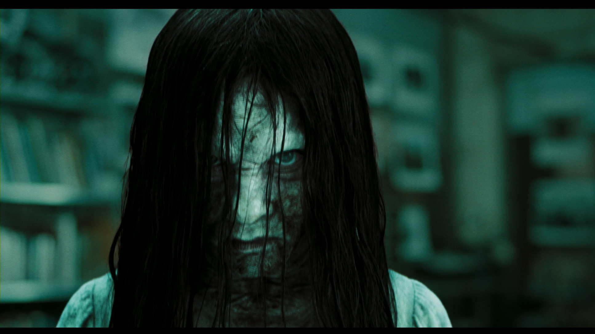

Director: Gore Verbinski
About the movie
The rules are simple: if you watch the tape, you will die in seven days. Katy, her boyfriends
and two of their friends decided to watch the tape regardless, because they didn’t
take it seriously. After seven days, every single one of them was dead. Katy’s
grieving mother couldn’t live with the prognosis of the doctors, that her little
girl’s heart just stopped, so she asked her sister Rachel, a journalist, to find out
what really happened to her daughter. After some questioning and investigating, Rachel comes
across the tape and decides to watch it herself. She promptly regrets that decision and
scaredly realizes what she did. She seeks help from her ex-boyfriend, who first waved the
whole thing off as a stupid High School rumor, but as weird things start happening, he
believes her.
When their common child watches the tape as well, they are more motivated
than ever to find a solution so they could safe him. They can connect the locations and
person shown on the tape with some in real life. While Noah goes to the psychiatric clinic
to find out more about Anna, the women on the tape, Rachel goes to the island to speak to
Annas husband. They find out, that they had an adopted child together, who brought darkness
over the island. As the father of Samora realizes that his daughter's evil is still present,
he kills himself. Noah and Rachel manage to uncover the dark secret of the Morgan family,
but to their horror that wouldn’t stop Samora. She wants to be heard; she will never
stop…
What I think
I watched this movie a long time ago already, but I forgot how good it was. I was hooked throughout the whole movie. The little boy, Aiden, really freaked me out at some parts. It was just such a great plot, with so many questions and secrets that all got answered and uncovered eventually, but they sure had me sitting there questioning a lot of things for the most part. I also have to add, that I really liked the ending. After Rachel was rescued and she was home again, I thought the movie was over; Happy End. So Noah’s death really caught me off guard and came out of nowhere. I was already concerned they would leave me without an explanation of why he died, and she didn’t, but thankfully, I realized it as soon as Rachel did.
A classic that everyone should definitely watch at least once.
Is it Worth a Watch?